Premium detailing for cars, boats & luxury vehicles.
Mobile detailing, paint correction, polishing, ceramic coating, headlight restoration and boat detailing in Chicago & North Shore. We help vehicles look clean, glossy and protected.
Services
Paint Correction
Swirl and scratch removal, gloss restoration, polishing and protection.
Luxury Vehicle Detailing
Careful detailing for premium vehicles, exotic cars, performance cars and daily drivers that deserve a show-room shine.
Boat Detailing
Boat wash, polishing, oxidation removal, gel coat shine restoration and wax protection.
Ceramic Coating
Long-lasting gloss and protection that makes washing easier.
Interior Detailing
Deep cleaning for seats, carpets, panels, cup holders, windows and trim.
Headlight Restoration
Restore clarity and improve the appearance of foggy headlights.
Now Detailing Boats
Restore Gleam Detailing now works with boats too — exterior wash, polishing, oxidation removal, gel coat restoration and wax protection. Great for making your boat look fresh, clean and glossy again.
Luxury & Boat Projects
Recent work from Restore Gleam Detailing — boats, luxury cars, performance vehicles and premium detailing projects.
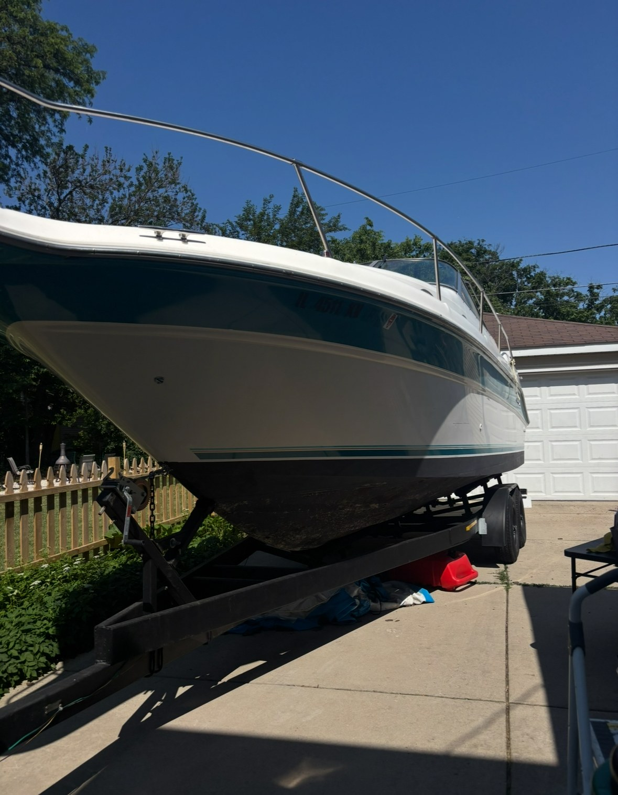
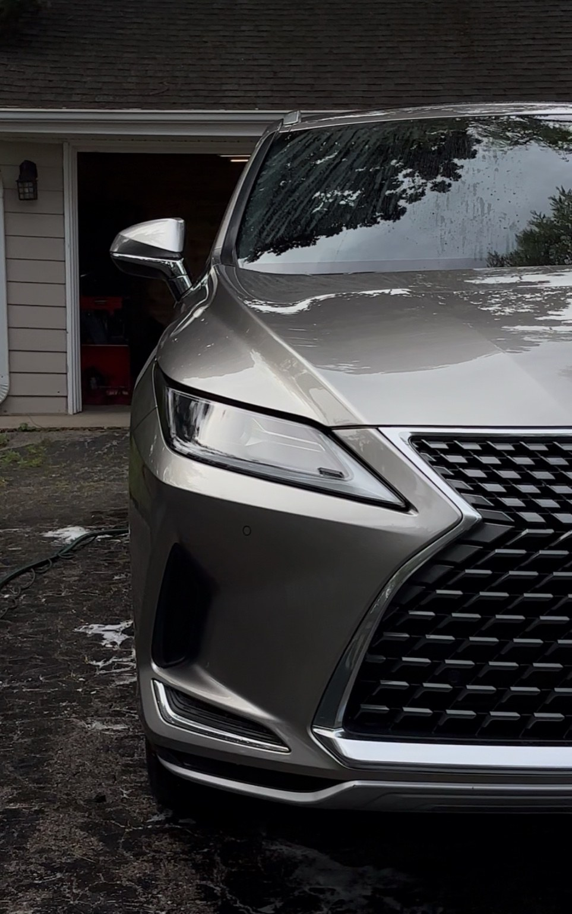
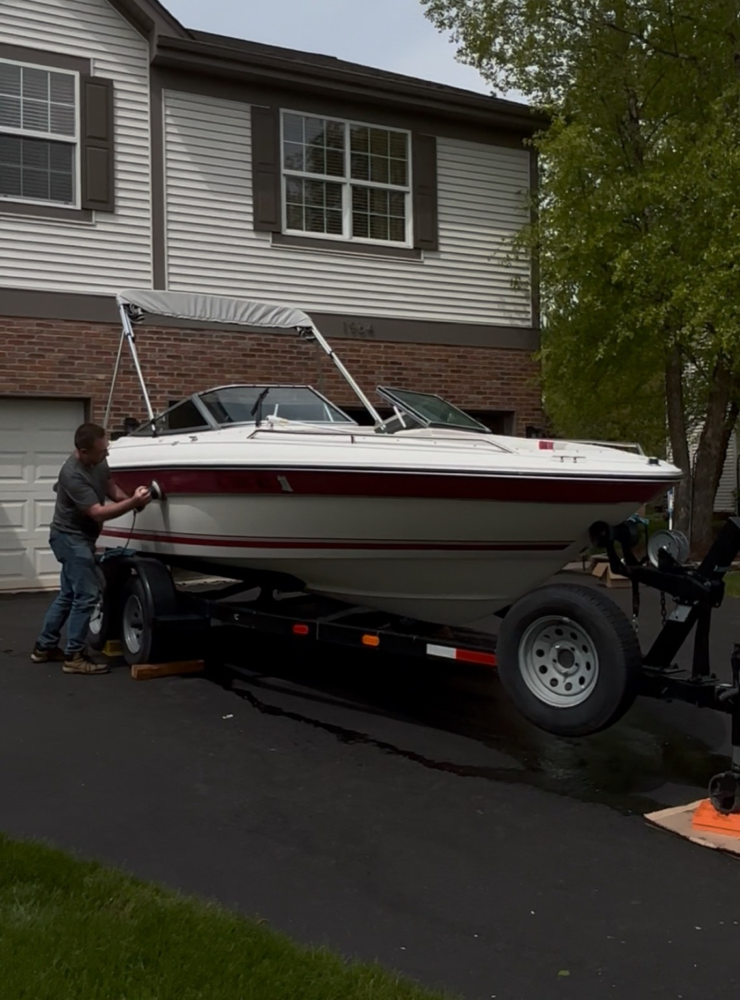
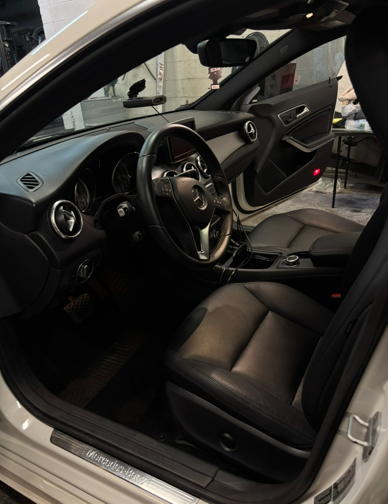
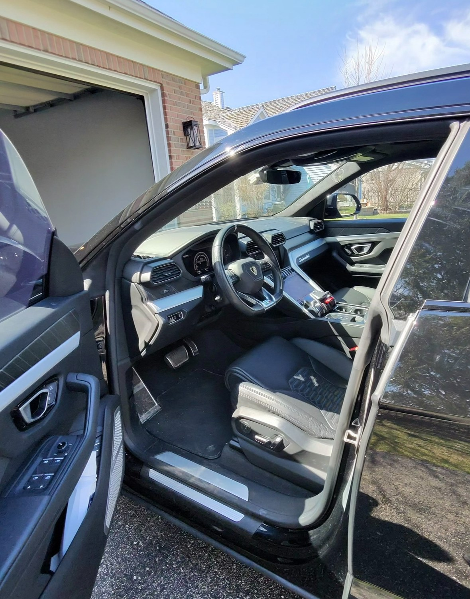
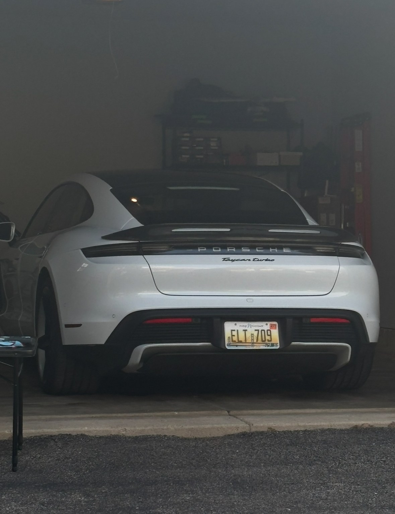
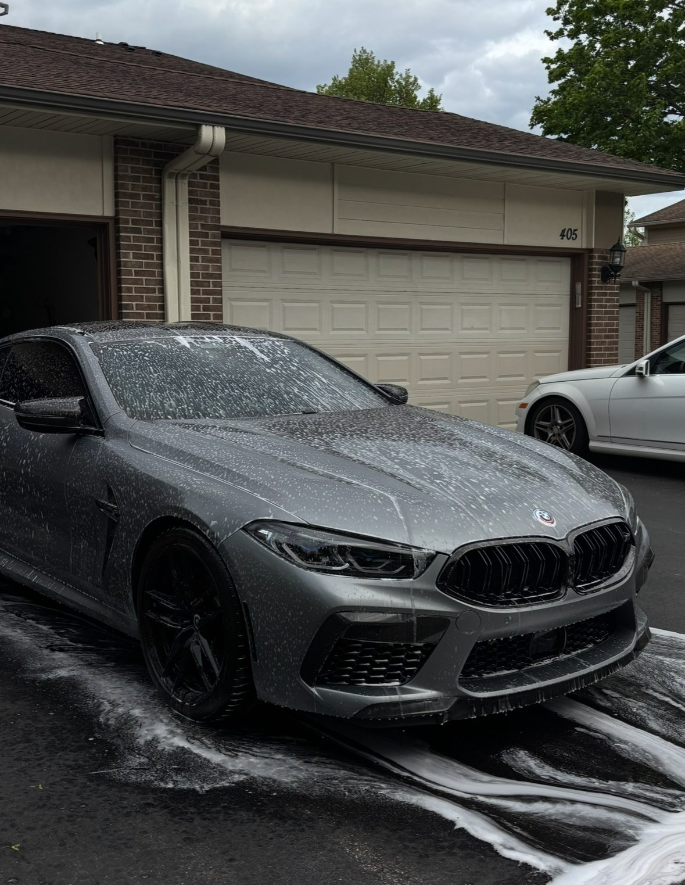
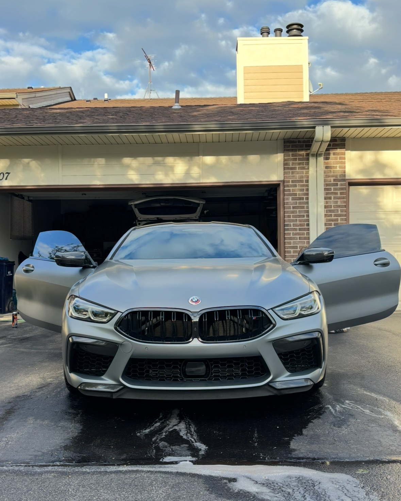
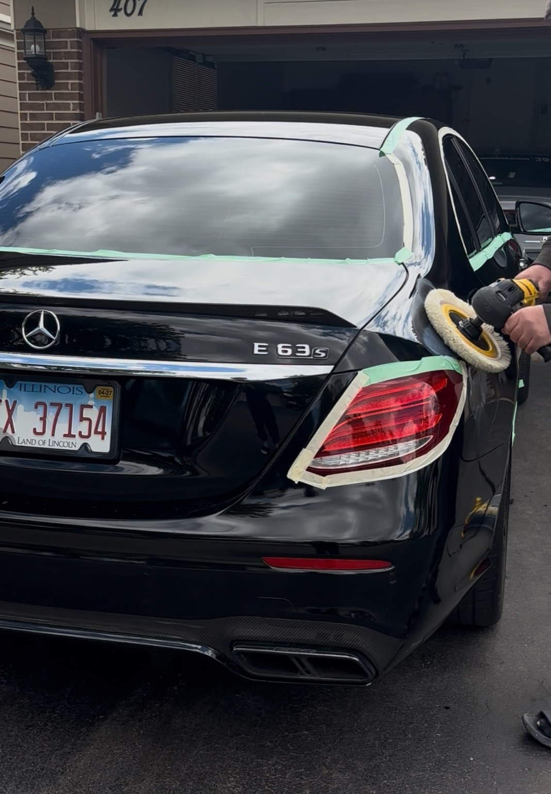

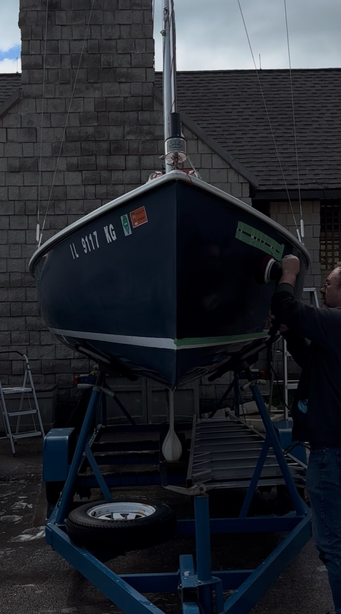
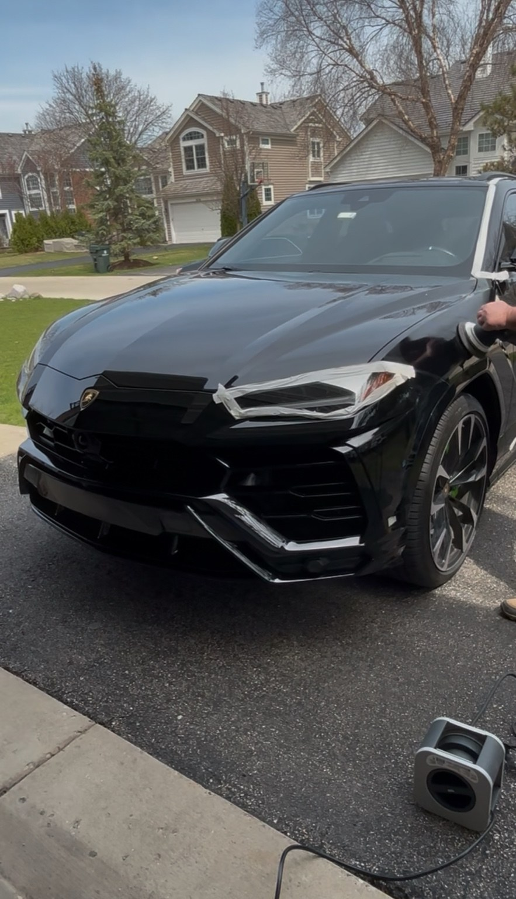
Follow Our Latest Work
See more new projects, boat detailing, luxury vehicles and before/after results on our new Facebook page.